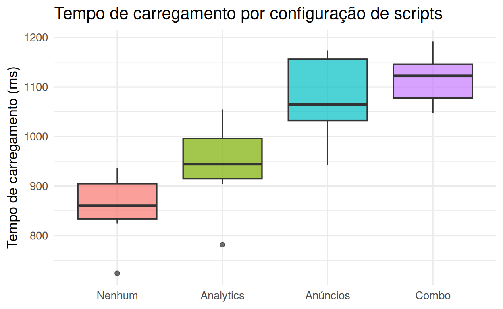
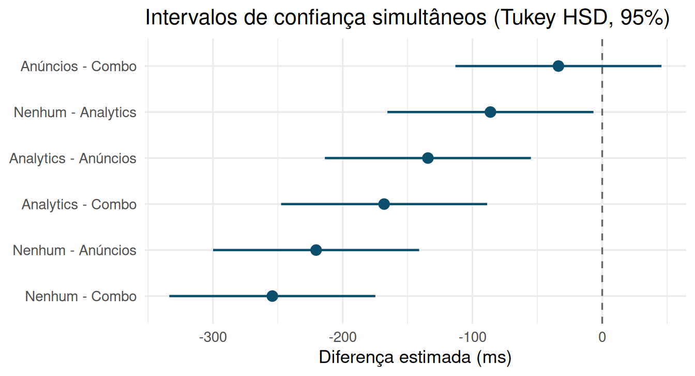

3.7 Procedimentos de comparação múltipla
Contrastes ortogonais planejados a priori resolvem o problema de forma elegante quando o número de perguntas é pequeno e conhecido antes da coleta de dados. Mas frequentemente queremos comparar todos os pares de médias, ou comparar cada tratamento contra um grupo controle, sem ter decidido de antemão exatamente quais comparações importam. Fazer isso com testes \(t\) repetidos, um por par, é perigoso: com \(t=4\) grupos há \(\binom{4}{2}=6\) comparações possíveis, e mesmo que \(H_0\) seja verdadeira em todas elas, a probabilidade de pelo menos um falso positivo ao nível nominal \(\alpha=0{,}05\) por teste é
\[P(\text{pelo menos 1 falso positivo}) = 1 - (1-\alpha)^{6} \approx 1 - 0{,}95^6 \approx 0{,}26,\]
mais de cinco vezes o nível nominal. Essa inflação da taxa de erro por família (family-wise error rate, FWER) é o problema que os procedimentos a seguir resolvem, cada um com um compromisso diferente entre conservadorismo e poder.
3.7.1 O perigo do “data snooping”
Antes de listar os procedimentos, vale nomear explicitamente o problema mais sutil que eles resolvem — não apenas “muitos testes \(t\)”, mas a prática de decidir qual comparação fazer depois de já ter visto os dados. O método científico usual segue a ordem hipótese \(\to\) delineamento \(\to\) coleta \(\to\) análise; o “data snooping” (“espionagem de dados”, ou garimpagem de hipóteses) inverte essa ordem: primeiro se exploram os dados em busca de qualquer padrão que pareça interessante, e só então se formula — e se “testa” — uma hipótese construída sob medida para aquele padrão, usando os mesmos dados que a sugeriram.
O problema não é hipotético. Suponha \(t\) grupos cujas médias populacionais são, na verdade, idênticas. Por puro ruído amostral, as \(t\) médias observadas nunca serão exatamente iguais; haverá sempre um par de médias mais distante entre si do que os demais. Se o pesquisador percorre os dados à procura do par mais discrepante e só então formula a hipótese “esses dois grupos diferem”, o teste \(t\) usual sobre esse par específico quase certamente rejeitará \(H_0\) com frequência bem maior que \(\alpha\) — não porque exista um efeito real, mas porque escolher o maior de vários desvios aleatórios e testá-lo como se fosse a única comparação planejada ignora toda a variabilidade dos \(\binom{t}{2}-1\) pares que não foram escolhidos. A analogia usual é a do atirador que dispara uma flecha na parede e só depois desenha o alvo ao redor do ponto de impacto: ele acerta o “alvo” sempre, mas isso nada prova sobre sua pontaria.
Os procedimentos planejados a priori (contrastes ortogonais da Seção 3.6, Tukey, Dunnett, Bonferroni) protegem apenas o conjunto de comparações especificado antes de examinar os dados — nenhum deles oferece garantia alguma sobre um contraste “descoberto” depois. O método de Scheffé, a seguir, é a resposta formal a essa lacuna: ele protege simultaneamente todo o espaço infinito de contrastes lineares possíveis, de modo que, mesmo que o pesquisador escolha o contraste mais favorável depois de olhar os dados, o FWER continua controlado em \(\alpha\).
3.7.2 Método de Scheffé
Controla o FWER para qualquer contraste que se queira testar, incluindo contrastes definidos depois de examinar os dados (comparações não planejadas, ou “garimpadas”, na linha da Seção 3.7.1) — é o procedimento mais geral e, por isso, o mais conservador. Rejeita-se \(H_0: L=0\) se
\[\frac{SQ_L}{QME} > (t-1)\, F_{\alpha;\, t-1,\, gl_{\text{erro}}}.\]
O fator \((t-1)\) multiplicando o valor crítico de \(F\) é o preço pago por proteger simultaneamente uma família infinita de contrastes possíveis (Scheffé, 1959) — e é exatamente esse fator extra que torna Scheffé a “licença para bisbilhotar os dados” de forma estatisticamente honesta: qualquer contraste, planejado ou não, só é declarado significativo se for grande o bastante para não ser apenas o maior entre muitos desvios aleatórios possíveis.
3.7.3 Método de Bonferroni
O método de Bonferroni (1936) divide o nível de significância global \(\alpha\) igualmente entre as \(m\) comparações planejadas: cada teste individual é avaliado contra \(\alpha/m\) (equivalentemente, cada p-valor é multiplicado por \(m\)). É simples, aplica-se a qualquer conjunto pré-especificado de comparações (não só pares), mas é conservador quando \(m\) é grande, perdendo poder.
3.7.4 Tukey HSD (honestly significant difference)
Desenhado especificamente para todas as comparações par a par entre \(t\) médias, usa a distribuição da amplitude estudentizada (studentized range) em vez da distribuição \(t\), o que o torna mais poderoso que Bonferroni para essa família específica de comparações (Tukey, 1949). É o procedimento padrão quando o objetivo é “comparar tudo com tudo” sem um grupo controle privilegiado.
3.7.5 Comparação com um grupo controle: Dunnett
Quando o interesse não é comparar todos os pares, mas sim cada tratamento contra um único grupo controle (como “Nenhum” no exemplo de scripts), o número de comparações cai de \(\binom{t}{2}\) para \(t-1\), e essas comparações são correlacionadas entre si (todas compartilham o mesmo grupo controle). O teste de Dunnett explora essa estrutura, sendo mais poderoso que Tukey ou Bonferroni para esse propósito específico (Dunnett, 1955).
3.7.6 Teste de amplitude múltipla de Duncan
Todos os procedimentos anteriores usam um único valor crítico para julgar qualquer par de médias. O teste de Duncan (Duncan, 1955) rompe com essa ideia: ordena as \(t\) médias amostrais, \(\bar y_{(1)} \le \cdots \le \bar y_{(t)}\), e define a amplitude \(p\) de uma comparação como o número de médias ordenadas que ela abrange (\(p=2\) para médias adjacentes, \(p=t\) para a maior contra a menor). Para cada amplitude \(p = 2, \ldots, t\), calcula-se um valor crítico próprio — a amplitude mínima significativa
\[R_p = r_{\alpha,\,p,\,gl_{\text{erro}}} \sqrt{\frac{QME}{n}},\]
em que \(r_{\alpha,p,\nu}\) vem de uma tabela específica de Duncan (implementada, por exemplo, em
agricolae::duncan.test()) e cresce com \(p\): \(R_2 < R_3 < \cdots < R_t\). A diferença
\(\bar y_{(j)} - \bar y_{(i)}\) é declarada significativa se exceder \(R_{j-i+1}\) — médias adjacentes
(\(p=2\)) só precisam superar o menor valor crítico da lista, enquanto a diferença entre a maior e a
menor média precisa superar o maior.
Essa escala móvel equivale a proteger cada amplitude \(p\) com um nível \(\alpha_p = 1 - (1-\alpha)^{p-1}\), que cresce com \(p\) em vez de permanecer fixo em \(\alpha\) — ao contrário de Tukey, que usa o mesmo nível \(\alpha\) para toda comparação par a par, qualquer que seja sua amplitude. Na prática, isso torna Duncan sistematicamente mais liberal (mais poder, mais comparações declaradas significativas) do que Tukey, mas ao custo de não controlar o FWER no nível nominal \(\alpha\) para o conjunto de comparações como um todo — a taxa real de pelo menos um falso positivo na família de testes fica acima de \(\alpha\). Por essa razão, seu uso vem sendo desaconselhado na literatura em favor de procedimentos que controlam o FWER de forma rigorosa (Tukey para pares, Dunnett contra um controle); ainda assim, permanece comum em periódicos de ciências agrárias, o que torna sua interpretação correta — inclusive de suas limitações — relevante para quem for ler ou revisar esse tipo de trabalho.
3.7.7 Agrupamento de tratamentos (compact letter display)
Uma forma compacta de reportar o resultado de comparações múltiplas par a par é atribuir letras às médias: tratamentos que compartilham pelo menos uma letra não diferem significativamente entre si; tratamentos sem letra em comum diferem. Essa representação (compact letter display, CLD) é extremamente comum em tabelas de resultados agronômicos e biológicos.
emm_scripts <- emmeans(mod_scripts, ~ config)
# todos os pares, três correções diferentes
pairs(emm_scripts, adjust = "tukey")## contrast estimate SE df t.ratio p.value
## Nenhum - Analytics -86.2 29.5 36 -2.922 0.0291
## Nenhum - Anúncios -220.5 29.5 36 -7.478 <0.0001
## Nenhum - Combo -254.2 29.5 36 -8.623 <0.0001
## Analytics - Anúncios -134.3 29.5 36 -4.556 0.0003
## Analytics - Combo -168.1 29.5 36 -5.701 <0.0001
## Anúncios - Combo -33.7 29.5 36 -1.144 0.6650
##
## P value adjustment: tukey method for comparing a family of 4 estimates## contrast estimate SE df t.ratio p.value
## Nenhum - Analytics -86.2 29.5 36 -2.922 0.0359
## Nenhum - Anúncios -220.5 29.5 36 -7.478 <0.0001
## Nenhum - Combo -254.2 29.5 36 -8.623 <0.0001
## Analytics - Anúncios -134.3 29.5 36 -4.556 0.0003
## Analytics - Combo -168.1 29.5 36 -5.701 <0.0001
## Anúncios - Combo -33.7 29.5 36 -1.144 1.0000
##
## P value adjustment: bonferroni method for 6 tests## contrast estimate SE df t.ratio p.value
## Nenhum - Analytics -86.2 29.5 36 -2.922 0.0511
## Nenhum - Anúncios -220.5 29.5 36 -7.478 <0.0001
## Nenhum - Combo -254.2 29.5 36 -8.623 <0.0001
## Analytics - Anúncios -134.3 29.5 36 -4.556 0.0009
## Analytics - Combo -168.1 29.5 36 -5.701 <0.0001
## Anúncios - Combo -33.7 29.5 36 -1.144 0.7282
##
## P value adjustment: scheffe method with rank 3# cada tratamento vs. o controle "Nenhum" (Dunnett)
contrast(emm_scripts, method = "trt.vs.ctrl", ref = "Nenhum", adjust = "dunnettx")## contrast estimate SE df t.ratio p.value
## Analytics - Nenhum 86.2 29.5 36 2.922 0.0167
## Anúncios - Nenhum 220.5 29.5 36 7.478 <0.0001
## Combo - Nenhum 254.2 29.5 36 8.623 <0.0001
##
## P value adjustment: dunnettx method for 3 tests# agrupamento compacto por letras (compact letter display)
multcomp::cld(emm_scripts, Letters = letters, adjust = "tukey")## config emmean SE df lower.CL upper.CL .group
## Nenhum 859 20.8 36 805 914 a
## Analytics 946 20.8 36 891 1000 b
## Anúncios 1080 20.8 36 1025 1135 c
## Combo 1114 20.8 36 1059 1168 c
##
## Confidence level used: 0.95
## Conf-level adjustment: sidak method for 4 estimates
## P value adjustment: tukey method for comparing a family of 4 estimates
## significance level used: alpha = 0.05
## NOTE: If two or more means share the same grouping symbol,
## then we cannot show them to be different.
## But we also did not show them to be the same.# Teste de Duncan (amplitude múltipla): fora do R base, via agricolae
duncan_scripts <- agricolae::duncan.test(mod_scripts, "config", console = FALSE)
duncan_scripts$groups # médias ordenadas + agrupamento por letras (Duncan)## tempo_ms groups
## Combo 1113.6160 a
## Anúncios 1079.8775 a
## Analytics 945.5325 b
## Nenhum 859.3801 cO agrupamento de Duncan reaparece na coluna groups acima: neste conjunto de dados, ele coincide
com o cld() de Tukey exibido antes (mesma partição em três grupos, “a”/“b”/“c”), porque os
quatro efeitos de configuração são grandes o bastante para que até o critério mais rigoroso de
Tukey já os separe. A diferença entre os dois métodos fica visível justamente nos casos de
fronteira — pares cuja diferença observada fica entre o valor crítico mais liberal de Duncan
para aquela amplitude e o valor crítico único, mais conservador, de Tukey; nesses casos, e só
neles, Duncan declara significativo um par que Tukey não declara, exatamente o preço, discutido
acima, de usar valores críticos \(R_p\) menores para amplitudes pequenas sem controlar
rigorosamente o FWER no nível nominal.

Note que os quatro procedimentos concordam nas conclusões mais nítidas (Nenhum difere de todos os demais) mas divergem nos casos de fronteira: Bonferroni e Scheffé — os mais conservadores — não rejeitam a diferença entre “Nenhum” e “Analytics” ao nível de 5%, enquanto Tukey a considera significativa. Não existe um procedimento universalmente “correto”; a escolha depende de qual família de comparações reflete a pergunta de pesquisa.

Um par difere significativamente quando seu IC não cruza zero: só “Anúncios − Combo” cruza, confirmando \(SQ_{L_3}\) não significativo da partição por contrastes ortogonais.
- Por que faz sentido usar Dunnett (não Tukey) quando a única pergunta de interesse é "cada configuração aumenta o tempo de carregamento em relação a não usar nenhum script?"
- Um pesquisador roda a ANOVA, olha os dados, percebe uma diferença "interessante" entre dois grupos que não tinha planejado comparar, e testa essa diferença com um teste $t$ comum. Por que isso viola as premissas por trás de todos os procedimentos desta seção, mesmo que o p-valor reportado pareça pequeno?
- Em que situação prática o conservadorismo extra do método de Scheffé compensa a perda de poder, em vez de ser simplesmente um custo a evitar?
- O teste de Duncan é mais liberal que Tukey porque usa um nível de proteção $\alpha_p$ que cresce com a amplitude $p$ da comparação, em vez de manter $\alpha$ fixo. Isso é uma vantagem ou uma desvantagem? Em que tipo de publicação você esperaria ver Duncan preferido a Tukey, apesar de sua FWER não controlada?